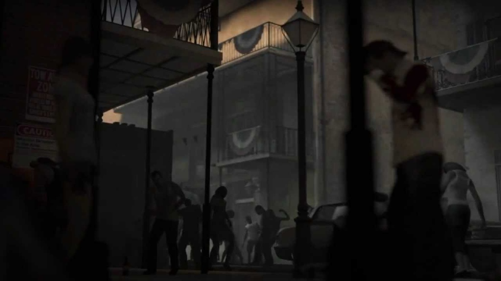
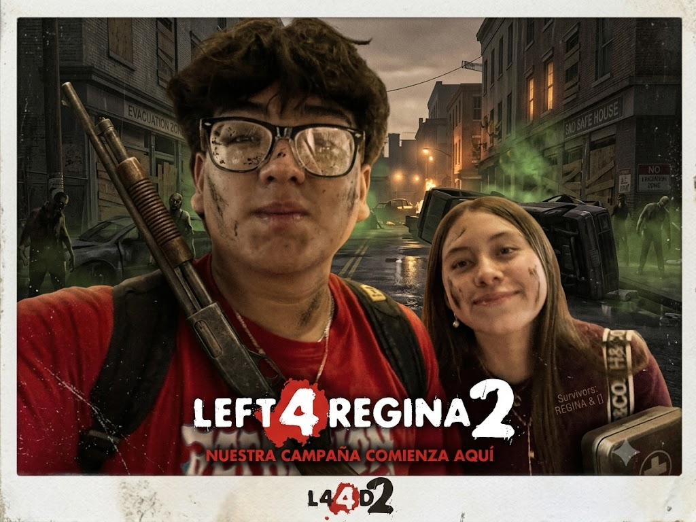

LEFT 4 REGINA 2

Los Favoritos
Nuestra Campaña
Entra a ver lo feliz que me haces y el futuro que sueño contigo.
Mutaciones (Cartitas)
Pequeños manuscritos de amor que cambian las reglas del juego.
Realismo (Música)
La banda sonora de nuestra supervivencia juntos.
Versus (Minijuego)
Un reto especial solo para ti, mi jugadora favorita.
Extras
Una sorpresa confidencial que se desbloquea al final.